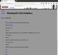
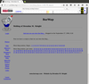
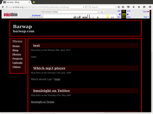

About This Website
This is Brendan's main website.
BarWap also has been on the web since around 1996 - (get off my lawn), so it is on version 3.2. A central repository giving links to photos, profile, projects and software.
For years on end the domain gets no love then suddenly springs into lift again. Currently hosted using Git Hub Pages using Lektor to build - https://github.com/bmsleight/BarWapV4/
Older Versions
The website has been around a while. The web archive project has a sighting from 2001
I love how web archive project, archives the silly JavaScript trick to get rid of the banner from the domain registration company.
How I miss Yahoo Calendar.
The next known sighting is when the website was used fro controlling some home automation and a message board.
All written in perl, in the spare cupboard - (What is a cloud?).
Blogging is very old school - see the internet archives. Quite a few years ago now.
Version 2.0
This was not too bad and had lots of photos and video and projects. Still old school, but is does start to mention twiter.
I can be contacted using the twitter or linkedIn links below or via email to this domain name.